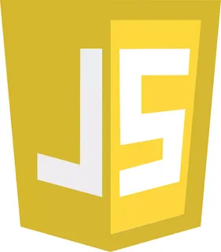
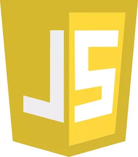

Веб-Разработка
Веб-разработка – это процесс создания и поддержания веб-сайтов и веб-приложений. Он включает в себя как фронтенд, так и бэкенд разработку. Фронтенд отвечает за все, что пользователь видит на экране: страницы, кнопки, формы и другие элементы интерфейса. Бэкенд же работает «за кулисами», обеспечивая взаимодействие между сервером, базами данных и клиентской стороной.
Современные технологии веб-разработки активно развиваются. В фронтенде широко используются HTML, CSS и JavaScript. HTML формирует структуру страниц, CSS отвечает за их стиль и оформление, а JavaScript добавляет интерактивности. Библиотеки и фреймворки, такие как React, Angular и Vue.js, значительно упрощают процесс создания сложных пользовательских интерфейсов.
 


Бэкенд разработка охватывает множество языков программирования, таких как Python, Ruby, Java и PHP. Эти языки помогают создавать серверные приложения, обрабатывать запросы и взаимодействовать с базами данных. Часто используются такие фреймворки, как Django для Python, Ruby on Rails для Ruby и Spring для Java, что облегчает и ускоряет разработку.

Одним из ключевых аспектов веб-разработки является работа с базами данных. Системы управления базами данных (СУБД), такие как MySQL, PostgreSQL и MongoDB, позволяют хранить, извлекать и модифицировать данные. Выбор правильной базы данных зависит от требований проекта, объема данных и необходимой скорости обработки информации.

Веб-разработка не ограничивается только созданием веб-сайтов. Это также включает в себя тестирование, оптимизацию производительности, безопасность и поддержку. Тестирование может быть как ручным, так и автоматизированным, что позволяет выявлять ошибки и баги до запуска сайта в продакшн.
Оптимизация производительности включает в себя различные техники, направленные на уменьшение времени загрузки страниц, улучшение отзывчивости и обеспечение высокой производительности приложения. Это может включать сжатие файлов, кэширование и использование сетей доставки контента (CDN).
Безопасность – еще один важный аспект веб-разработки. Уязвимости, такие как SQL-инъекции, межсайтовый скриптинг (XSS) и кража сессий, могут серьезно повлиять на безопасность приложения. Разработчики должны следовать лучшим практикам, таким как использование защищенных соединений (HTTPS), регулярные обновления программного обеспечения и использование аутентификации и авторизации.
С учетом быстрого развития технологий веб-разработка становится более доступной. Появление конструкторов сайтов и платформ для управления контентом, таких как WordPress, позволяет даже тем, кто не имеет технического образования, создавать и управлять своими сайтами. Тем не менее, для создания сложных и высококачественных веб-приложений все еще требуется опыт и знание технологий.
В заключение, веб-разработка — это многогранный процесс, который требует сочетания технических навыков, креативности и понимания потребностей пользователей. С учетом постоянных изменений в технологиях и функциональности, веб-разработчики должны постоянно обучаться и адаптироваться к новым условиям, чтобы оставаться конкурентоспособными на рынке.